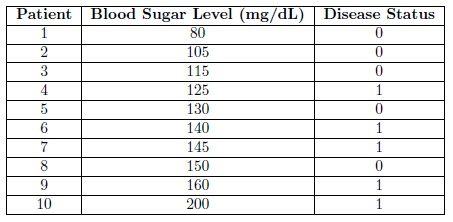
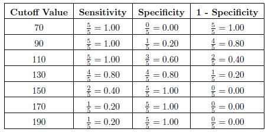
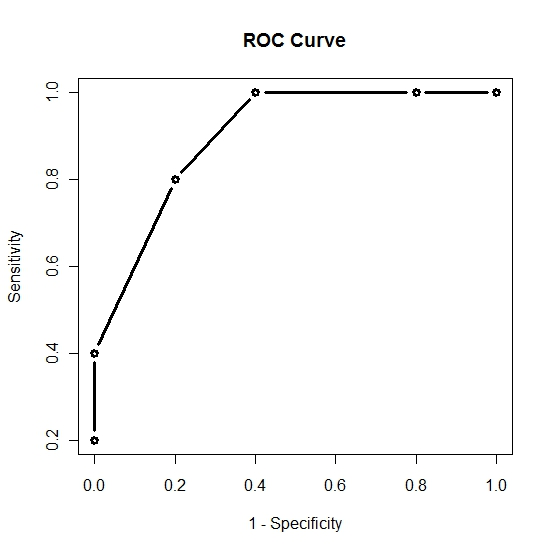

Receiver Operating Characteristic Curve
A receiver operating characteristic (ROC) curve is used to make an assessment of the overall value of a new diagnostic test when
- The diagnostic test is based on an observed variable that lies on either a continuous or graded scale.
- A gold standard exists or the disease status of the patients is already known.
A ROC curve is a plot of sensitivity as a function of (1-specificity) for the possible cutoff values z. The ROC curve was first developed by engineers during World War II for detecting enemy objects in battlefields. Now ROC curves are commonly used when comparing the predictive accuracy of two or more models in medicine, radiology, etc.
A ROC curve is constructed by varying the cutoff value used to determine which values of the observed variable will be considered "diseased" and then plotting the resulting sensitivies against the corresponding false positive rates (1-specificities). Consider the following example.
Diabetes is a metabolism disorder in which either the body does not produce enough insulin, produces no insulin, or has cells that do not respond properly to the insulin. The current gold standard for diagnosing diabetes is an elevated blood sugar level after an overnight fast. Suppose that we were the developers of this test and we wanted to know what blood sugar level gives us the highest sensitivity and specificity. We take a sample of 10 patients and measure their blood sugar level after an overnight fast. Also through some other means (perhaps divine intervention) we are aware of the true disease status (whether or not they have diabetes) of each of the patients in our sample. The data, arranged according to Blood Sugar Level for convenience, is shown in the following table.

Now we calculate the observed sensitivity and specificity for various cutoff values. Consider the cutoffs of 70, 90, 110, 130, 150, 170, and 190 mg/dL. Now for a cutoff of 70 we will diagnose all of the patients with a blood sugar level greater than 80 with diabetes. Then the sensitivity, which is the proportion of patients with the disease that are correctly diagnosed/classified as having the disease, is equal to 5/5 = 1.00. The specificity, which is the proportion of patients without the disease that are correctly diagnosed as not having the disease, is equal to 0/5 = 0.00. The sensitivities, specificities, and (1 - specificity) are provided in the following table for each of the cutoffs.

Then plotting the 1 - Specificity on the x-axis versus the Sensitivity on the y-axis and connecting the points we get the following ROC curve.

Now that we have the ROC curve we ask the question: What is the cutoff value that will give us the "optimal" sensitivity and specificity. We note that as we increase the cutoff value sensitivity will decrease and specificity will increase. Thus we want to find the cutoff value that will give us a satisfactory level of both sensitivity and specificity. The "optimal" value will depend on the researcher however here we will assume that we want to maximize both sensitivity and specificity. From our small sample it would appear that a cutoff value of 130, which gives us a sensitivity of 0.80 and a specificity of 0.80, will be adequate. This means we would conclude that everyone with a blood sugar level above 130 should be diagnosed as diabetic. Clearly to make such an important decision the sample size should be much larger. In reality a blood sugar level after an overnight fast above 140 is considered sufficient evidence to diagnose the patient with diabetes.
-- ErinEsp - 04 Jan 2011